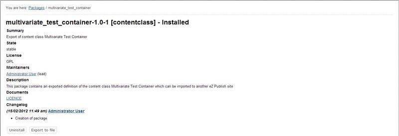

Select the "Setup" tab in the administration interface and click the "Packages" link on the left. You will be taken to the list of packages located under the "Local" system repository (look at the next screenshot).

Packages Repository
This interface can also be accessed by requesting "/package/list" in the URL. If you wish to view packages from another internal repository, select the name of repository from the drop-down list and click the "Change repository" button.
Find the package you wish to export and click on its name. The system will display the package summary as shown in the following screenshot.

Package Summary
Click the "Export to file" button in order to download the ".ezpkg" file.